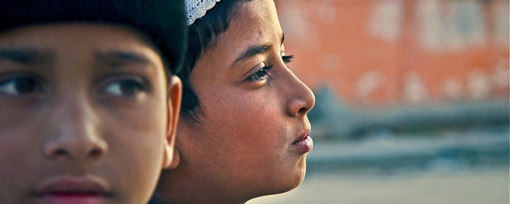
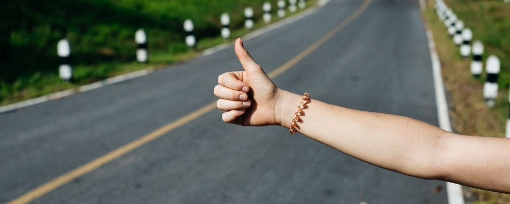
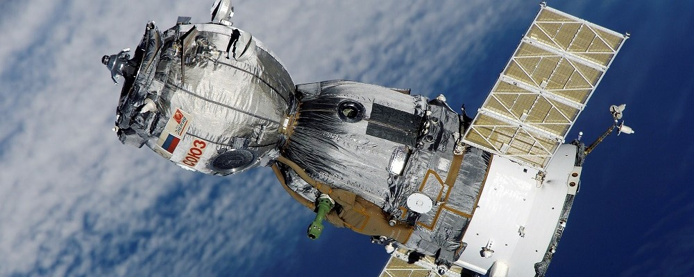
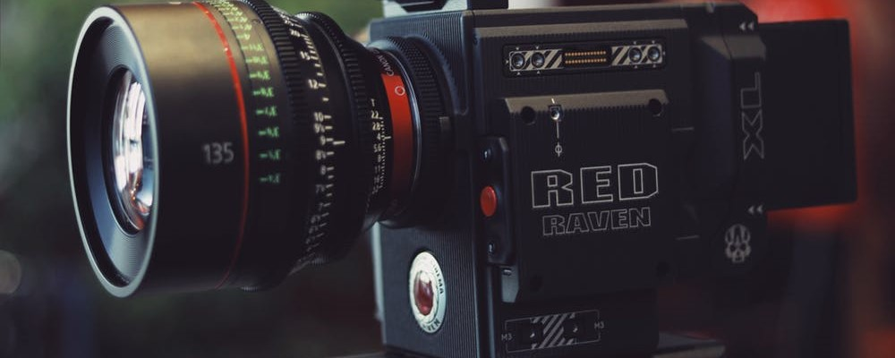

-

Portraits 2 Passages
After many travels around the world meeting incredible people from various cultures and backgrounds, I decided to found this association with Lou Grimal to offer a web platform to travelers, allowing them to share portraits of people in the form of interviews.
The database can then be used by linguists to study rarely spoken languages or by curious who want to see the world from a different point of view.
-

Start & Stop
As a member of Engineer without borders (and then treasurer) at Troyes, I created the Start & Stop event : a hitchhiking contest with many challenges, the aim being to meet people and discover the area.
The event done, I was then responsible for the production of a web series following the teams. The videos are available on Youtube: Start & Stop - From Troyes to Brussels and Start & Stop - Objectif vélo !
-

OrbitClean
OrbitClean was a project aiming to clean the earth orbital areas of its debris. I worked on it during my Master degree with two other students for the Aerospace Student Challenge (2015).
After a selection, we presented the project during the final at Le Bourget, in front of Thales, Safran, Airbus and the European Space Agency.
-

Student Associations
As the president of the Association of Young Entrepreneurs, I organized conferences about startups and entrepreneurship. I also helped students to find human resources, especially technical ones to start their projects.
Media UTT is the first association I joined, and this is where I learned video editing and managing audiovisual projects. I took part of a student news show with several small reportages.